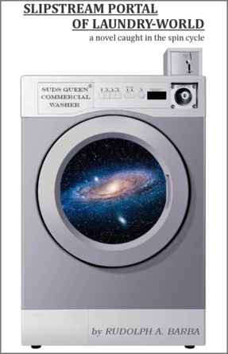
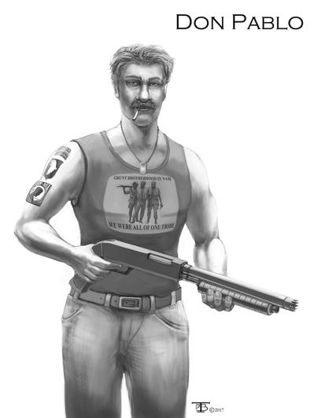
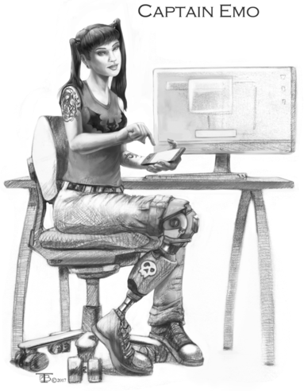
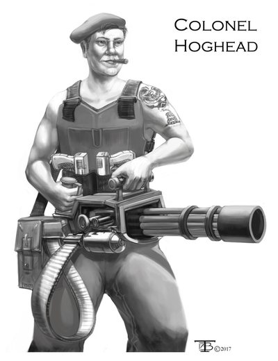
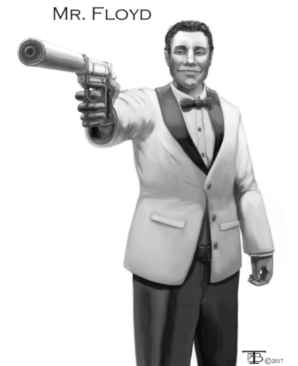

Outline/Rundown/Review/Whatnot
Abbreviated Smash & Grab Version:
High Voltage Entertainment! Boldly Ambitious! Gripping Themes! Space Alien Conspiracies Exposed! Whiplashing Action Scenes! A Literary Super Nova! Slick & Suave! Simply Awesome! Damn Good Stuff!
Extended Version:
Alex, the protagonist carried over from Last House On The Block, is working on his second novel. Writing is therapy as he deals with issues, particularly bouts of depression, ennui and self-imposed seclusion.
Surprisingly he also experiences pleasant distraction from forlornness while engaged in ordinary household chores. However, there is one task he cannot tap an iota of amusement from, it is in fact the bane of his existence.
Nothing compares to the crippling despair that overwhelms him when visiting Laundry-World. The epitome of crushing gloom, the place blights his self-image with unworthiness and sadly confirms his bleak, humdrum reality.
So it is only fitting that here, not unlike Aladdin finding a genie in a lamp, Alex encounters a mystic Buddhist monk climbing out a washing machine. Lama Rana casually explains the washer is the Slipstream Portal that funnels into and out of alternate realities.

But the Buddhist monk is not on a sightseeing tour today; he dropped in specifically to counsel Alex. Rana will be Alex’s life coach, and in the process he will teach him the proper mindset to be an inter-dimensional adventurer, a knight-errant…nothing boring with that.

Meanwhile---and for the last several months—Alex relies on rapt escapism to counter the curse of ineptness and failure. He becomes master of the universe created in his fiction, clearly a lifesaver for a man that otherwise has no life. And that parallel universe is the core story of the novel in the novel.
The sheer scope of the narration is staggering. From the beginning of recorded history surfaces a sketchy account of mystical documents that had been gifted from the gods of yore to mortals. Over the course of several millennia they were stolen, lost, and forgotten; precious parchments that were whisked away in the relentless social upheaval that defines civilization’s saga. One such goatskin scroll is called Mdju Netjer…Words Of The Gods, an instructional guide to transcendental wisdom entrusted to the Enlightened Ones long before biblical times.

First probing into Egyptian history and its mythology, then following threadbare clues through the final throes of Rome’s collapsing empire, which led into the Dark Ages and Medieval times, a murky trail leads to the current whereabouts of the timeless treasures. When the specific content of the legendary codices comes to light, the fragile balance of good and evil is gravely upended.
The writings reveal astonishing revelations in the form of encrypted knowledge that enables a trained initiate to manipulate paranormal activity. Once guarded by ancient high priests, sages and adepts, they are now in the hands of unscrupulous secret societies that are shrouded in conspiracies; appalling conspiracies that loom over today’s world. Rogue deep state cartels having supernatural clout in their arsenal is on par with possessing nuclear weapons…which they do. That volatile combo in the hands of madmen lusting for unassailable power sets the tone of the tale.
Hiding in plain sight powerful cabals stage major false flag events to justify sweeping congressional acts that enhance national security while curtailing constitutional rights. These cloaked entities are hell-bent on eradicating the cancer of democracy; yet all the while thrive in our refusal to acknowledge their existence. Contemporary conspiracies aiming to stealthy seize uncontested authority across the board, whether spawned by government elitists, mega-corporations, the upper military echelon or alliances among them…are as real and serious as a Brazilian prison riot.
It is here, and it is now.

Welcome to the nest of secret societies mapping abysmal plots entwined in a web of conspiracy schemes. All of which are designed to initiate a global One World sovereignty under autocratic rule.
Yet that will not happen without a scuffle, not on the watch of concerned brave-hearts dedicated to a mission…dismantling the shadowy, degenerate hierarchy entrenched in our society. A killer crew of maverick heroes effectively thwarts the bad guys’ schemes. The special-op task force, managed by Dr. Panda Head, is in the house armed with ball-busting weapons and salty attitude, including the Mayan sorceress Ynez, one super-badass gal that wields occult powers. Colonel Hoghead has joined the team as well…his battle cry alone can rip the turret off a tank.

Besides operatives in the field scouring for intel, the success of destabilizing covert entities prepping for a virtual coup d’état is dependent on timely and accurate information. Coincidently, instant information is the new millennium’s currency; alas, much of it is counterfeit.
Seeding deception and promoting misleading spins on news reports via social media and pinhead talk radio hosts are cunning weapons of the cabals. Producing and circulating totally engineered news is the cabal’s latest WMD.
For the supreme authority behind the powers that be, truth and facts bandied about in mainstream media are onerous liabilities that have no function in their administration. Whatever furthers their agenda is right, even if it is patently wrong. Veracity is irrelevant, results are all that matter.